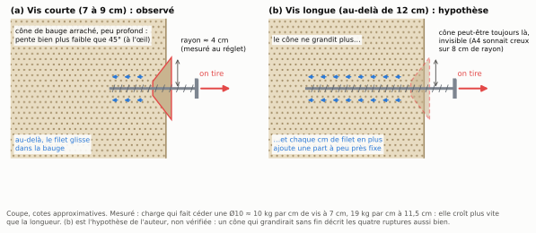

Des vis dans la bauge
Peut-on visser dans la bauge ? Quelles vis, quelle longueur, combien ça tient, de côté et en traction. Retour d’expérience pour les artisans.
Sommaire
- En bref
- Pourquoi ce papier
- D’où on part
- Les essais
- Résultats
- Recommandations
- Limites et suite
- Annexe A — Les vis
- Annexe B — Modélisation : ce que nous pensons qu’il se passe
- Annexe C — Relevés bruts et étalonnage
- Annexe D — État de l’art : ce qu’on dit et ce qu’on a mesuré ailleurs
- Remerciements
- Références
Identifiant : DOI Zenodo attribué à chaque version, voir la page du dépôt. Relevés, photos, figures et calculs : https://github.com/Remi-C/renovation-terre-crue, site https://remi.cura.info/renovation-terre-crue/. Texte, données et figures sous licence CC BY 4.0. Retours : les « issues » du dépôt GitHub.
En bref
- Peut-on visser dans la bauge ? Les guides de la construction en terre crue disent oui, mais sans détail : ni diamètre, ni longueur, ni charge. Nous avons fait des essais sur un mur pour donner ces repères aux artisans.
- Les vis : des vis de charpente à filetage total, de qualité, en diamètre 8 et 10 mm. Pour la Ø10, un pré-trou de 5 à 6 mm réduit nettement le couple de pose et permet de rester dans les préconisations du fabricant de la vis.
- De côté (en cisaillement), on atteint facilement 300 kg. Ce qui compte surtout, c’est la longueur de vis dans la bauge : 200 kg dès 5,5 cm en Ø10 et dès 7,5 cm en Ø8 ; au moins 300 kg dès 9,5 cm en Ø10 ; une petite vis Ø6 sur 3,5 cm tient déjà 40 kg.
- Ces chiffres de côté valent pour une vis qui fixe un montant en bois contre le mur : le montant rend l’ensemble plus rigide qu’une vis seule.
- En traction (vis tirée hors du mur), une vis tient moins. Une Ø10 a cédé à 70 kg entrée de 7 cm, à 130 kg à 9 cm, à 220 kg à 11,5 cm ; de 12,5 à 17,5 cm, elle a tenu 300 à 400 kg. Jusqu’à 11,5 cm au moins, c’est la traction qui limite.
- Combien y accrocher ? Nous ne donnons pas de charge sûre : elle dépend de trop de choses (la bauge du mur, la façon dont la vis est chargée, les chocs, ce qui arrive si elle cède). Les textes conseillent des vis de 10 à 20 cm ; pour d’autres murs de terre, ils admettent 3 à 50 kg par fixation ; aucun ne donne de charge pour la bauge. Pour plus, multiplier les vis, ou noyer une pièce de bois dans la bauge.
- Prévoir de la redondance : même si une vis tient 300 kg, répartir la charge sur plusieurs vis, pour qu’un défaut local de la bauge ne compromette pas l’ouvrage.
- Limites : un seul mur, de bauge sèche, un essai par configuration. Il n’existe pas de marge officielle pour la bauge : le papier donne, pour comparer, celles qu’on pratique ailleurs.
Pourquoi ce papier
Rénover une maison en bauge, c’est un jour fixer quelque chose au mur : une ossature d’isolation, des étagères, un sabot de solive. Les vis ne sont pas la solution à tout ; pour le lourd, les guides proposent des tiges qui traversent le mur ou des pièces de bois noyées dans la terre. Mais une vis dont on connaît la tenue ajoute une corde à l’arc du rénovateur.
Ces essais ne sont pas des essais professionnels. Ils ont été faits par un particulier qui rénove sa maison, sur un mur à sa disposition : avoir accès à un bâti ancien pour y faire des essais n’est pas facile. Nous les publions avec leurs limites et nous demandons un retour à ceux qui fixent dans la terre tous les jours.
Une vis est chargée de côté (on dit aussi « en cisaillement ») quand on la tire parallèlement au mur, comme le poids d’une étagère tire sur ses vis ; elle est chargée en traction quand on la tire dans son axe, hors du mur, comme les vis du haut d’une console ; quand elle sort du mur, on parle d’arrachement. Nous distinguons ce qui est mesuré (lu au peson ou au comparateur), estimé par l’auteur (à l’œil ou de mémoire), calculé à partir des mesures, et supposé (une explication probable, non vérifiée).
D’où on part
Les guides français de bonnes pratiques de la construction en terre crue admettent la vis directe. Ceux de la bauge et de la brique de terre crue citent la « vis à bois entrée directement dans le matériau sans pré-trou ni chevilles dans la mesure où les charges sont faibles et sans trop serrer », dans un encadré déclaré non normatif [1, 2] ; celui du pisé admet le « vissage direct » pour des charges faibles [3]. Une association d’éco-construction, l’APTE, conseille dans le pisé des vis entrées d’au moins 10 à 15 cm [4] ; un praticien de la bauge anglaise, des vis de 12,7 cm ou plus [5] ; un guide de construction en bauge, issu d’un projet de recherche européen, des vis d’au moins 20 cm pour fixer portes et fenêtres [25].
Aucune de ces sources ne donne de charge ni de diamètre. Pour d’autres murs (brique de terre, pisé, carreaux de terre, blocs de chanvre), des fabricants et des avis techniques donnent des charges par fixation, de 3 à 50 kg [11, 26–28] ; aucun pour la bauge. Or « sans pré-trou » n’a pas de sens sans diamètre : une vis de 6 mm sur 80 mm et une vis de 10 mm sur 260 mm ne se posent pas du tout de la même façon. Nous sommes partis de ce principe, visser directement dans la terre, pour le caractériser : combien ça tient, à quelle profondeur, avec quel diamètre, et à partir de quand le pré-trou devient nécessaire.
Nous n’avons trouvé aucune mesure d’une vis ou d’un clou posé après coup dans une terre crue et chargé de côté, ni d’une vis à bois tirée hors d’un mur de bauge, après avoir cherché en cinq langues ; les mesures voisines portent sur d’autres fixations (annexe D) ; la plus proche, de côté, porte sur des barres d’acier collées dans de petits cubes de pisé [29].
Les essais
Le mur et les vis
Un mur en bauge d’un cabanon de jardin, en place, vieux d’au moins 50 ans, épais d’au moins 45 cm. Il est abrité depuis longtemps par un bardage en bois sur lame d’air, sans signe d’humidité. La bauge est très sèche ; sous l’outil, elle se raye et part en poussière ; elle contient des cailloux de silex. Sa teneur en eau n’a pas été mesurée.
Deux journées d’essais sur ce mur : de côté le 30 octobre 2026 (essais C1 à C8), en traction le 7 novembre 2026 (essais A1 à A8).
Les vis sont des vis à bois du commerce : des fischer PowerFull II de 8 et 10 mm de diamètre, filetées sur presque toute leur longueur, sous agrément européen pour l’usage dans le bois (aucun agrément ne couvre la terre) [20] ; de côté, une vis inox de 6 mm ; en traction, une vis à bois de 6 mm filetée sur 5 cm. Dans les essais de côté, chaque vis plaque contre le mur une planche de 45 mm (douglas ; chêne d’épaisseur non notée) et entre dans la bauge de sa longueur moins la planche. Les trois vis de 260 mm isolent l’effet de la pièce : planche de chêne (C1), de douglas (C7), aucune planche (C8, qui reprend la vis et le trou de C1, tête au ras du mur). Détail en annexe A.

Le montage de côté

On tire chaque planche vers le bas, le long du mur, comme un poids, vers une platine de réaction vissée plus bas dans la même bauge par quatre vis Ø10. On met en charge en serrant un écrou sur une tige filetée, au bout d’une chaîne qui comprend un peson électronique de 1 tonne. Un comparateur, un cadran qui lit les déplacements au centième de millimètre, touche le chant de la planche. Le matériel coûte quelques centaines d’euros.

On monte l’effort par paliers, en notant à chaque palier l’effort le plus haut et le déplacement ; la première charge se lit à part des rechargements. Les efforts sont en kilos, comme sur le peson (100 kg font environ 1 kN).
Les efforts sont sûrs : le peson est dans la chaîne de traction. Les déplacements sont fragiles (comparateur tenu par la platine qui recule un peu, tige inclinée de 25 à 45° sans que l’angle soit noté, petites lectures au dixième) : le déplacement réel peut différer de la lecture d’un facteur 0,7 à 1,4, et sous 50 kg on lit surtout le montage. Nous ne donnons donc de la raideur qu’une fourchette large (section suivante). La forme des courbes reste sûre ; les comparaisons entre essais aussi, l’inclinaison de la tige étant comparable d’un essai à l’autre, sans trop lire dans les petits écarts. Sont écartés la première charge de C1 (une manille frottait) et les déplacements de C8 (le comparateur a probablement glissé sur la petite tête de vis) ; l’effort de C8, lui, est sûr.
Le montage en traction

La bauge est dressée au rabot à l’endroit de la vis (5 mm enlevés au plus). La vis traverse une platine d’acier, qui en prend 15 mm, et entre dans la bauge. On la tire dans son axe, perpendiculairement au mur, par une tige filetée qui tourne dans un écrou ; l’écrou est porté par un pont à quatre pieds appuyés sur le mur, à une dizaine de centimètres de la vis. Le même peson de 1 tonne est dans la chaîne. Pas de comparateur : avant de céder, la vis ne bouge que de quelques centièmes de millimètre, sous ce que ce matériel lit.
Chaque vis est posée à fond, puis chargée. Si elle tient, on la dévisse de 1 cm et on recommence, jusqu’à ce qu’elle cède : une même vis donne ainsi plusieurs longueurs. Une charge tenue l’a été au moins quelques secondes ; c’est un minimum. Seule la dernière charge d’un essai est une rupture. Pré-trous : 6 mm sur toute la longueur pour les Ø10 × 200, 5 mm pour les Ø10 × 100 et pour une des trois Ø8 ; aucun pour les deux autres Ø8 et pour la Ø6.
Un mur, deux journées, un essai par configuration
Un seul mur, sec, deux journées (30 octobre et 7 novembre 2026), un essai par configuration, des charges de courte durée. Des mesures répétées vaudraient évidemment mieux. Mais nous n’avons trouvé aucune autre mesure de ce genre, et les essais de côté sont remarquablement cohérents entre eux : les quatre Ø10 avec planche entrées de 9,5 à 21,5 cm ont toutes porté 300 kg ou plus ; à 100 kg, trois Ø10 de profondeurs différentes lisent le même déplacement à deux centièmes près ; au rechargement, trois vis lisent 1,6 à 1,65 mm à 300 kg. Avec aussi peu de variabilité, ces mesures ont déjà une valeur en elles-mêmes. En traction, les quatre ruptures Ø10 se rangent dans l’ordre des longueurs ; les trois Ø8 de même longueur ont cédé entre 120 et 200 kg.
Résultats
De côté : combien ça a tenu
| Essai | Vis | Dans la bauge | Planche | Effort maximal porté | Ce qui s’est passé |
|---|---|---|---|---|---|
| C2 | PowerFull II Ø10 × 200 | 15,5 cm | chêne | 350 kg | pas de rupture |
| C1 | PowerFull II Ø10 × 260 | 21,5 cm | chêne | 300 kg | pas de rupture |
| C7 | PowerFull II Ø10 × 260 | 21,5 cm | douglas | 300 kg | pas de rupture ; un craquement à 300 kg |
| C3 | PowerFull II Ø10 × 140 | 9,5 cm | douglas | 300 kg | pas de rupture ; « limite craquement » à 300 kg |
| C8 | vis de C1, sans planche | 26 cm | aucune | 300 kg et plus | pas de rupture ; déformation visible à l’œil |
| C4 | PowerFull II Ø10 × 100 | 5,5 cm | douglas | 200 kg | « arrachement » |
| C5 | PowerFull II Ø8 × 120 | 7,5 cm | douglas | 200 kg | « ça coulisse » |
| C6 | inox A2 Ø6 × 80 | 3,5 cm | douglas | 50 kg | « ça glisse » |

Les Ø10 entrées d’au moins 9,5 cm ont porté 300 à 350 kg : ce sont des minimums, on s’est arrêté avant la rupture, et on ne peut pas les classer entre elles. Pour les vis courtes, les mots notés indiquent probablement que la vis est sortie du mur (elles n’ont pas été examinées au démontage).
Sous 100 kg, la profondeur change peu ; le diamètre, si

Sous 100 kg, les Ø10 se comportent pareil quelle que soit leur profondeur : à 100 kg, celles entrées de 5,5, 9,5 et 15,5 cm lisent toutes 0,60 à 0,62 mm. Notre lecture, supposée (annexe B) : seuls les premiers centimètres de vis travaillent de côté ; au-delà, la profondeur sert à empêcher la vis de sortir. Elle n’est pas inutile pour autant : les vis courtes sont celles qui ont lâché.
La Ø8 bouge nettement plus : 50 à 70 % de plus que les Ø10, lus à 80 et 100 kg (1,0 mm contre 0,6 mm à 100 kg). À 40 kg, toutes lisent 0,2 mm, la précision de lecture ; l’écart commence vraisemblablement plus tôt. Une seule Ø8 a été essayée : sans trop lire dans ce chiffre, ce qui est sûr, c’est qu’elle a lâché à 200 kg, et qu’elle soit moins raide que la Ø10 est tout à fait concevable.
Une fourchette de raideur, très limitée. En rapportant l’effort au déplacement lu, une Ø10 qui plaque une planche donne 130 à 250 kg par millimètre de glissement de la planche (premières charges jusqu’à 100 kg et rechargements de C1 à C4 et C7) ; la Ø8, environ 70 à 100 kg par millimètre. Avec l’incertitude de lecture (facteur 0,7 à 1,4), la fourchette des Ø10 s’élargit à environ 90 à 360 kg par millimètre : à 100 kg, une planche ainsi fixée bouge de 0,3 à 0,9 mm. C’est la raideur de tout l’assemblage, vis, planche et bauge ensemble, pas celle de la bauge seule ; elle repose sur des déplacements fragiles et sur un seul mur.
Un ressort freiné

- Déchargé jusqu’à zéro, l’ensemble revient presque entièrement : 94 % du déplacement (C2, après 315 kg), 81 % (C7, après 174 kg).
- À une petite baisse, il ne revient pas : à chaque palier, l’effort retombait aussitôt, souvent de 20 à 30 kg vers 100 kg (estimation), sans que le comparateur bouge.
Supposé : la planche frotte sur le mur et y reste accrochée ; déchargée tout à fait, la vis, qui fait ressort, la ramène (annexe B).
La vis seule, sans planche
C8, tête au ras du mur et sans planche, a porté 300 kg et plus, sans doute possible pour l’auteur, mais en bougeant de plusieurs millimètres : au moins 3 mm à 300 kg, estimés à l’œil, le plus gros déplacement de la journée. Sur les photos prises vers 250 kg, un vide s’ouvre à l’entrée du trou, du côté opposé à la traction (constat visuel, sans échelle ; photo en annexe B). Le trou avait déjà servi à C1. C’est le cas d’école : en pratique, une vis tient toujours quelque chose, une platine, un montant, une planche.
En traction : combien ça a tenu
| Essai | Vis | Pré-trou | A tenu (longueur dans la bauge : charge) | A cédé | Ce qu’on a vu |
|---|---|---|---|---|---|
| A7 | PowerFull II Ø10 × 100 | 5 mm | 8 cm : 100 kg | 7 cm : 70 kg | cône de 4 cm de rayon |
| A6 | PowerFull II Ø10 × 100 | 5 mm | — | 8 cm : 100 kg | cône ; nombreux cailloux |
| A5 | PowerFull II Ø10 × 200 | 6 mm | 10,5 cm : 150 kg ; 9,5 cm : 160 kg | 9 cm : 130 kg | « cône invisible de rayon 4 cm » |
| A4 | PowerFull II Ø10 × 200 | 6 mm | 17,5 cm : 380 kg ; 16,5 cm : 400 kg ; 15,5 cm : 350 kg ; 14,5 cm : 320 kg ; 13,5 et 12,5 cm : 300 kg | 11,5 cm : 220 kg | pas de cône visible ; la bauge sonne creux sur 8 cm de rayon |
| A1 | PowerFull II Ø8 × 120 | 5 mm | — | 10,5 cm : 150 à 200 kg | « arrachement, feuille de surface » (paille) |
| A2 | PowerFull II Ø8 × 120 | aucun | 10,5 cm : 120 puis 150 kg | 10,5 cm : 160 à 170 kg | pas de cône |
| A3 | PowerFull II Ø8 × 120 | aucun | — | 10,5 cm : 120 à 130 kg | petit cône ; sonne creux plus loin |
| A8 | vis à bois Ø6, filetée sur 5 cm | aucun | — | 5 cm : 56 kg | — |


- Chaque rupture est un glissement de la vis le long de son filet. Jusqu’à 9 cm, la vis arrache en surface un cône de bauge d’environ 4 cm de rayon, peu profond (quelques centimètres, à l’œil). Plus profond, le cône ne se voit plus, mais la bauge sonne creux autour du trou, sur 8 cm de rayon pour A4. L’auteur pense que le cône est toujours là, parfois invisible.
- La tenue monte vite avec la longueur : une Ø10 cède à 70 kg à 7 cm, à 100 kg à 8 cm, à 130 kg à 9 cm, à 220 kg à 11,5 cm, soit trois fois plus pour 4,5 cm de plus.
- De 12,5 à 17,5 cm, A4 a tenu 300 à 400 kg sans céder : ce sont des minimums. Elle a cédé ensuite à 11,5 cm.
- Les trois Ø8 entrées de 10,5 cm ont cédé entre 120 et 200 kg. La seule posée avec un pré-trou (A1) n’a pas tenu moins que les deux autres.
- La Ø6, entrée de ses 5 cm de filet, a cédé à 56 kg (60 mm notés sur le moment ; la vis n’a que 5 cm de filet, et seul le filet était dans la bauge).
La longueur dans la bauge compte toute la vis, pointe comprise. La pointe porte peu : sur la Ø10, le filet n’est complet qu’à 8 ou 9 mm du bout, puis il est denté sur 3 cm environ (lu sur photo, annexe A).
Selon la longueur : de côté et en traction

Les deux sollicitations ont été essayées séparément, dans deux montages : de côté, la vis plaquait une planche contre le mur ; en traction, elle était tirée seule. La figure les met côte à côte, elle ne les combine pas. En haut, les longueurs conseillées par les textes (« Recommandations »).
- Jusqu’à 11,5 cm au moins, la traction est la plus faible. Entrée de 7 à 9 cm, une Ø10 cède à 70 à 130 kg en traction ; de côté, une Ø8 entrée de 7,5 cm a porté 200 kg, une Ø10 entrée de 9,5 cm au moins 300 kg.
- À 15,5 cm, les deux dépassent 350 kg : on ne sait pas laquelle est la plus faible.
Ces deux chiffres ne se combinent pas en une tenue sous charge mixte. Une vis chargée de côté presse la bauge contre son filet, ce qui change probablement sa tenue en traction. Et, de côté, la planche peut faire passer une part de l’effort en traction dans la vis : C4 a cédé de côté à 200 kg en sortant du mur (« arrachement »), mais quelle part de ces 200 kg tirait la vis dans son axe, aucune mesure ne le dit. Passer d’un essai à l’autre multiplierait leurs incertitudes.
La pose : le couple et le pré-trou
Poser une vis demande un effort de torsion, le couple, en newtons-mètres (N·m). La limite de pose retenue est le couple qui casse la vis, divisé par 1,5, le rapport que l’agrément demande lui-même pour la pose dans le bois : 26 N·m pour la Ø10, 18,7 N·m pour la Ø8 [20]. Le couple est déduit du réglage où la visseuse débrayait, vitesse non notée, 1re supposée ; dans un mur des combles (10 octobre 2026), ce plafond a été vérifié à la clé (annexe C).

- Ø10 sans pré-trou (combles, première campagne) : la visseuse a bloqué à 18–20 N·m vers 10 cm de bauge, avec une vis pourtant plus courte que les plus longues du cabanon ; la pose a été très difficile. Si le couple continuait de croître au même rythme (calcul), la limite de pose serait atteinte vers 13 à 15 cm, et la casse vers 20 à 23 cm.
- Ø10 avec pré-trou (cabanon, seconde campagne) : 6 mm sur presque toute la longueur pour C1, C2 et C7 ; 5 mm sur 3,5 cm de bauge au plus pour C3 et C4, donc un pré-trou partiel. Presque tout a été posé à 20 N·m au plus (réglage 10 de la visseuse), jusqu’à 21,5 cm de bauge. Seule C7 (21,5 cm) a dû être finie au couple maximal de la visseuse, à cause d’un caillou ; elle n’a pas cassé.
- Ø8, 7,5 cm, pré-trou partiel : la visseuse a débrayé au réglage 4 (environ 7 N·m) à 5 mm de la fin, loin de sa limite de pose.
- Ø6 inox, 3,5 cm, sans pré-trou : pose « très sensible », la vis s’est mise à tourner dans le vide.
D’une campagne à l’autre (deux murs différents), le pré-trou a clairement réduit le couple de pose : il permet de rester dans les préconisations du fabricant de la vis.
Recommandations
Ce sont les conseils de l’auteur, tirés de ces mesures. Ils valent pour ces vis, dans cette bauge sèche, chargées pendant peu de temps. Ils ne remplacent ni un calcul ni un essai sur votre mur.
Pas de charge sûre, mais des repères
Nous ne donnons pas de charge sûre par vis. Ce qu’une vis peut porter sans risque dépend de trop de choses que nos essais ne couvrent pas : la bauge de votre mur (paille, cailloux, humidité, profondeur), la façon dont la vis est chargée, la durée, les chocs, et ce qui arrive si elle cède. Un essai par point, sur un seul mur, ne donne pas de chiffre sûr pour un autre mur.
Dans la vraie vie, une vis travaille à la fois en traction et de côté, et nous ne savons pas comment les deux interagissent dans la bauge. Pour situer une fixation par rapport à nos mesures, l’auteur retient, à la longueur posée, la plus faible des deux tenues : la traction, jusqu’à 11,5 cm au moins.
Ce que conseillent les textes, à côté des mesures
La figure 10 met nos mesures sous les longueurs de vis conseillées par les textes publiés.
- Longueur : ceux qui en donnent une conseillent des vis entrées de 10 à 15 cm dans le pisé [4] ; dans la bauge, des vis de 12,7 cm et plus [5], ou de 20 cm et plus pour fixer portes et fenêtres, dans une bauge sans trop de cailloux [25]. Pour la bauge, c’est la longueur de la vis : sous une pièce fixée, la longueur dans la bauge est plus courte. Nos mesures vont dans le même sens : en traction, la tenue monte vite avec la longueur, jusqu’à 12 cm environ.
- Charge : aucun texte ne donne de charge pour une vis dans la bauge. Pour d’autres murs, les charges conseillées par point de fixation restent faibles : 3 à 15 kg pour des chevilles de 3 à 9 cm dans une maçonnerie de briques et le pisé [11] ; au-delà de 10 kg, une structure qui répartit la charge, dans des cloisons de briques de terre comprimée [27] ; 25 kg au plus en traction et 50 kg de côté, dans des carreaux de terre stabilisée au ciment [28] ; 5 kg sur une vis à bois Ø6 ancrée de 7 cm, 10 kg sur une Ø8 ancrée de 9,5 cm, dans des blocs de chanvre [26].
- Nos mesures sont bien au-dessus : en traction, 56 kg pour une Ø6 entrée de 5 cm, 70 à 220 kg pour une Ø10 entrée de 7 à 11,5 cm, et aucune rupture au-delà de 12 cm, jusqu’à 400 kg. Les unes ne se déduisent pas des autres : autres matériaux, autres fixations, et des marges dont la base n’est pas toujours publiée.
Pour plus de charge
Le plus sûr est de multiplier les vis (« Prévoir de la redondance », plus bas), ou de passer aux méthodes structurelles traditionnelles : une pièce de chêne de forte section noyée dans la bauge. Le guide de la bauge cité plus haut propose de même des pièces de bois noyées pendant la construction, taillées en queue d’aronde pour ne pas sortir du mur [25].
Le diamètre
- Ø8 pour quelques dizaines de kilos et pour accrocher du non structurel. De côté, entrée de 7,5 cm, elle a porté 200 kg ; en traction, entrée de 10,5 cm, elle a cédé entre 120 et 200 kg.
- Ø10 au-delà d’environ 40 à 50 kg par vis : à 80 et 100 kg de côté, la Ø8 a bougé 50 à 70 % de plus (lu au comparateur, une seule Ø8 essayée), et elle a lâché à 200 kg.
Le pré-trou
Ce que montrent nos deux campagnes (résultats ci-dessus) : le pré-trou réduit clairement le couple de pose et permet de rester dans les préconisations du fabricant de la vis. Ce que l’auteur en retient :
- Ø6 sur 80 à 100 mm, la vis usuelle que les guides ont probablement en tête : pas besoin de pré-trou, pour leurs charges faibles (sous une planche de 45 mm, il ne reste que 3,5 à 5,5 cm de bauge ; une Ø6 entrée de 5 cm a cédé à 56 kg en traction).
- Ø8 sur 120 mm : on peut éventuellement s’en passer (souvenir de l’auteur ; non mesuré). Sur 160 mm, l’auteur conseille un pré-trou : sans, on arriverait vite à un problème (conseil de l’auteur ; non mesuré).
- Ø10 : un pré-trou, presque toujours. Sans pré-trou, la pose a été très difficile dès 10 cm ; avec un pré-trou de 5 ou 6 mm, elle est presque toujours restée à 20 N·m au plus jusqu’à 21,5 cm, sous la limite de pose de la vis.
- Diamètre du pré-trou : 5 ou 6 mm, nous ne savons pas lequel convient le mieux. Un pré-trou au moins égal au noyau de la vis (6,2 mm pour la Ø10) soulagerait peut-être la pose : reste à vérifier. En traction, la seule Ø8 posée avec un pré-trou de 5 mm n’a pas tenu moins que les deux posées sans (« En traction : combien ça a tenu »). Le foret souffre dans le silex : celui de 6 mm avait son carbure ébréché.
- Si la visseuse bloque, dévisser un peu et revisser, ou repercer, plutôt que forcer à la clé : forcer rapproche la vis de sa casse en torsion, et une pose très dure charge la vis plus que l’usage (à l’atelier, une vis finie à la clé est ressortie pliée, vraisemblablement à la pose).
La suite à mesurer. La vraie question n’est pas « pré-trou ou non » : pour chaque diamètre de vis et chaque profondeur dans la bauge, quel pré-trou, de 0 (aucun) à 5 ou 6 mm, garde la pose sous la limite de la vis ? Nos deux campagnes n’en donnent que deux cas, pour la Ø10 : sans pré-trou, et avec 5 ou 6 mm. La Ø8 de 160 mm sans pré-trou est parmi les premières mesures à faire.
Plaquer une pièce contre le mur raidit
Une vis tient toujours quelque chose. Plaquée au mur par la vis, la planche a porté 300 kg et plus en bougeant peu ; la vis seule a porté autant, mais en bougeant de plusieurs millimètres. La pièce empêche la tête de tourner et frotte sur le mur (supposé, annexe B). Une pièce décollée du mur, par exemple une ossature posée sur un isolant souple, perd probablement ce renfort. Les guides disent « sans trop serrer » : nous n’avons pas mesuré à partir de quand un serrage abîme le filet dans la terre ; la vis de 6 mm (C6) a tourné dans le vide en fin de pose, probablement ce que les guides veulent éviter.
Prévoir de la redondance
Même si une vis Ø10 bien ancrée a tenu 300 kg et plus, ne faites pas porter un ouvrage par une seule vis. La bauge n’est pas homogène : une poche moins dense, une fissure, un caillou ou un endroit plus humide, et la vis qui tombe là tient beaucoup moins. Cela ne se voit pas en posant la vis. Répartissez la charge sur plusieurs vis, de sorte que l’ouvrage tienne encore si l’une d’elles est mal ancrée. Une vis qui entre trop facilement ou qui tourne dans le vide en fin de pose signale un défaut local : mettez-en une autre à côté.
Et avec une platine métallique ?
Un sabot ou une platine de fixation est le cas classique ; nous ne l’avons pas mesuré. Une platine mince (au plus 5 mm pour une Ø10) laisse tourner la tête : on s’attend à un comportement entre la planche et la vis seule. Une platine épaisse (au moins 10 mm) la retient comme la planche (règle des assemblages bois, annexe B). Un sabot qui porte une solive en porte-à-faux tire ses vis dans leur axe : c’est la traction, la plus faible des deux (« Selon la longueur : de côté et en traction »).
Quelle marge prendre ?
Le facteur de sécurité est le rapport entre l’effort qui fait céder (ou la charge d’essai tenue) et la charge qu’on s’autorise. Il dépend de ce qu’on fixe (ce qui arrive si ça tombe) et du risque de choc. Il compte d’autant plus dans la bauge, matériau hétérogène, essayé ici vis par vis sur un seul mur.
Il n’existe pas de marge officielle pour une fixation dans la bauge : aucune norme ni aucun guide que nous ayons lu n’en donne. Pour comparer, voici ce qui se pratique pour d’autres matériaux et d’autres fixations ; d’une source à l’autre, le facteur ne se compare qu’en disant sur quoi il porte (détail en annexe D).
Dans la terre crue
- bauge, vis à bois, selon un praticien anglophone : 2 sur la rupture d’une vis essayée à la main ; on double le nombre de vis [5] ;
- pisé : 1,5 sur une charge d’essai tenue par la fixation, sur un muret [3] ;
- blocs de terre comprimée, console sur vis à béton : 3,3 sur un seul essai poussé à la rupture [7] ;
- briques de terre crue, chevilles plastiques : 5 sur la moyenne d’essais d’arrachement [11].
Dans d’autres matériaux
- béton et maçonnerie, essai de réception sur chantier : 1,25 à 1,5 sur une charge d’épreuve tenue [16] ;
- bois, assemblages : 2,2 à 2,9 sur une valeur basse, que 95 % des essais dépassent [18, 19] ;
- béton et maçonnerie, chevilles d’isolation par l’extérieur : 3,0 sur une valeur basse du même type [21] ;
- béton et maçonnerie, essais préliminaires sur chantier : 3 à 7 sur la charge tenue ou la rupture [16] ;
- béton et maçonnerie, chevilles essayées sur site : 4,7 à 7 sur la moyenne des 5 plus faibles de 15 essais ; 9 à 14 pour des chevilles sans homologation ou posées dans les joints [17].
Nos essais sont uniques. De côté, les Ø10 entrées d’au moins 9,5 cm n’ont pas rompu ; en traction, celles entrées de plus de 12 cm non plus : ce sont des minimums. Passer d’essais de chantier à une valeur admissible demande au moins une quinzaine d’essais [14].
Limites et suite
Aux limites déjà dites (un mur sec, deux journées, un essai par configuration), s’ajoutent :
- pour tous les essais : ni teneur en eau ni densité mesurées ; rien sur la charge permanente pendant des années (la terre peut se tasser lentement), sur une bauge humide ou sur d’autres vis ; rien sur une vis chargée à la fois de côté et en traction ;
- en traction : quatre ruptures Ø10 seulement ; chaque longueur essayée sur une vis déjà chargée et dévissée (A4 a porté quatorze charges avant de céder) ; charges tenues quelques secondes ; aucun déplacement mesuré, donc ni raideur ni fluage ; des essais de novembre, où la bauge de surface est probablement plus humide qu’en été (supposé).
La bauge varie. Sur une dizaine de trous percés pour ces essais, deux ont été très perturbés par le matériau (cailloux, paille), selon l’auteur : d’où la redondance. La bauge des combles (annexe C) paraît meilleure à l’œil que celle du cabanon (moins de paille visible, moins friable, moins de cailloux) ; nos chiffres y sont donc probablement prudents, sans que ce soit vérifié.
Un essai sur site ne classe pas des produits [15] : ce papier ne compare pas de marques. Pour refaire les essais, l’annexe C dit ce que nous ferions autrement.
Restent à mesurer : en traction, des ruptures au-delà de 15 cm, sur des vis neuves chargées une seule fois ; la tenue d’une vis chargée à la fois de côté et en traction ; un autre mur, dont celui des combles ; le pré-trou qu’il faut selon le diamètre de la vis et la profondeur, dont la Ø8 de 160 mm sans pré-trou (recommandations, « Le pré-trou »).
Ce papier est un premier jalon. Nous cherchons des retours d’artisans de la bauge, des auteurs des guides de bonnes pratiques, et de toute personne qui a mesuré ou simplement observé la tenue d’une fixation dans la terre : par les « issues » du dépôt GitHub https://github.com/Remi-C/renovation-terre-crue.
Annexe A — Les vis
Caractéristiques des vis
Les valeurs ci-dessous sont celles que publient les fabricants ; nous n’en avons mesuré aucune sur les vis. Aucun fabricant ne donne de valeur pour la terre : le pré-perçage et la limite de pose sont ceux du bois.
| fischer PowerFull II Ø10 | fischer PowerFull II Ø8 | SECCARO inox A2 Ø6 | |
|---|---|---|---|
| Désignation et article | FPF II CTF 10,0 × longueur ; articles 562943 (100), 562945 (140), 562948 (200), 562951 (260) | FPF II CTF 8,0 × 120 ; article 562931 | vis à bois inox A2 6 × 80, tête demi-ronde, boîte de 75 |
| Longueurs essayées | 100, 140, 200, 260 mm | 120 mm | 80 mm |
| Longueur filetée | 80, 120, 180, 240 mm | 101 mm | filetage total ; longueur exacte non publiée |
| Partie non filetée sous le dessus de la tête (tête comprise) | 20 mm ; tige lisse de Ø 7,0 mm | 19 mm ; tige lisse de Ø 5,85 mm | non publiée |
| Diamètre au filet | 10,0 mm | 8,0 mm | 6 mm |
| Diamètre du noyau (tige pleine sous le filet) | 6,2 mm | 5,2 mm | non publié |
| Tête | fraisée, diamètre 18,0 mm, hauteur 8,0 mm | fraisée, diamètre 14,4 mm, hauteur 4,6 mm | demi-ronde ; dimensions non publiées |
| Empreinte | Torx TX50 | Torx TX40 | cruciforme Pozidriv, d’après l’annonce du vendeur ; taille non publiée |
| Pointe | pointe perceuse de 8 mm, qui pré-perce le bois | pointe fine, sans pointe perceuse | non publiée |
| Acier | acier au carbone zingué bleu (zinc d’au moins 5 µm) | acier au carbone zingué bleu (zinc d’au moins 5 µm) | inox A2 (famille des inox au chrome-nickel) ; nuance exacte non publiée |
| Couple qui casse la vis en torsion | 39 N·m | 28 N·m | non publié |
| Couple de pose recommandé par le fabricant | non publié | non publié | non publié |
| Limite de pose retenue (casse ÷ 1,5, calcul) | 26 N·m | 18,7 N·m | — |
| Pré-perçage recommandé dans le bois | 6 mm | 5 mm | non publié |
| Moment qui fait plier la vis (plastification) | 48 N·m | 30,2 N·m | non publié |
| Résistance de l’acier en traction | 37,8 kN | 26,4 kN | non publiée |
| Agrément | ETA-21/0751, pour le bois | ETA-21/0751, pour le bois | aucun |
| Sources | [20, 22, 23] | [20, 22, 23] | [24] |
- Couple de pose. Aucun fabricant ne donne de couple de pose. L’agrément demande seulement que, dans le bois, le couple moyen de pose reste au moins 1,5 fois sous le couple qui casse la vis (bois de 480 kg/m³) [20] : c’est la limite de pose retenue dans ce papier.
- Pré-perçage. Dans le bois, l’agrément recommande 5 mm pour la Ø8 et 6 mm pour la Ø10, jamais plus que le noyau [20]. Les pré-trous faits dans la bauge (5 et 6 mm) restent sous le noyau. Dans les bois durs comme le chêne, il recommande de pré-percer la Ø10 et limite la Ø8 non pré-percée à 60 mm de filet.
- Vis inox. SECCARO est une marque vendue sur les places de marché (vendeur ecomserv) : nous n’avons trouvé ni fiche technique ni valeur mécanique [24]. La vis n’est connue que par son libellé d’achat.
- Vis Ø6 de l’essai en traction (A8). Vis à bois autoforeuse de bonne qualité, non structurelle, marque non notée : filetée sur 5 cm à partir de la pointe, puis 1 cm de cannelures et un fût lisse. Aucune valeur publiée relevée.
- La pointe, lue sur photo. Les vis des essais, photographiées contre un réglet le 8 novembre 2026, à 1 mm près : la PowerFull II Ø10 n’a un filet complet qu’à 8 ou 9 mm de la pointe, puis un filet denté jusqu’à 35 à 41 mm ; la Ø8, un filet complet à 9 mm environ, sans dents ; la Ø6 de A8, à 8 mm environ.
Pose et ancrage, essai par essai (de côté)
| Essai | Vis | Dans la bauge | Planche | Pré-trou dans la bauge | Pose : où la visseuse a débrayé |
|---|---|---|---|---|---|
| C1 | Ø10 × 260 | 21,5 cm | chêne, percée à 8 mm | 6 mm, foret de 240 mm | réglage 8, vers la moitié |
| C2 | Ø10 × 200 | 15,5 cm | chêne | 6 mm, foret de 200 mm | réglage 4, reste 10 cm à visser |
| C3 | Ø10 × 140 | 9,5 cm | douglas | 5 mm, foret de 80 mm | réglage 4, reste 6 cm ; réglage 8, reste 2 cm |
| C4 | Ø10 × 100 | 5,5 cm | douglas | 5 mm, foret de 80 mm | réglage 4, reste 2 cm |
| C5 | Ø8 × 120 | 7,5 cm | douglas | 5 mm, foret de 80 mm | réglage 4, reste 5 mm |
| C6 | inox Ø6 × 80 | 3,5 cm | douglas | aucun | très sensible, tourne dans le vide |
| C7 | Ø10 × 260 | 21,5 cm | douglas | 6 mm, foret de 240 mm | finie sans débrayage (réglage « max ») ; un caillou frotte |
| C8 | Ø10 × 260 (vis de C1) | 26 cm, tête au ras du mur | aucune | trou de C1 | revissée 4,5 cm plus loin |
Notes :
- La profondeur dans la bauge est la longueur de la vis moins 45 mm de planche. L’épaisseur des planches de chêne (C1, C2) n’a pas été notée.
- La profondeur réelle des pré-trous n’a pas été notée ; la longueur du foret en donne un maximum. Les pré-trous de 5 mm sur foret de 80 mm ne couvrent qu’une partie de la longueur de vis dans la bauge.
- La vitesse de la visseuse n’a pas été notée ; la 1re vitesse est supposée. En 2e vitesse, les couples seraient deux fois plus bas.
- Une vis neuve par essai, sauf C8, qui reprend la vis et le trou de C1.
- Les vis essayées sont à environ 1,70 m du sol ; la platine de réaction, tenue par quatre vis Ø10 × 200 mm dans la même bauge, vers 1,10 m (hauteurs estimées).
Annexe B — Modélisation : ce que nous pensons qu’il se passe
Cette annexe est la partie la plus fragile du papier. Elle ne porte aucun des résultats : ceux-ci viennent des mesures. Elle propose des explications, chacune avec un schéma et une règle qu’on peut réutiliser ailleurs. Nous n’ajustons pas de courbes, et nous ne donnons pas la résistance de la bauge comme une valeur.

1. Seuls les premiers centimètres de vis travaillent de côté
Une vis chargée de côté dans un matériau qui la soutient sur toute sa longueur se comporte comme une poutre posée sur des ressorts. Elle ne plie que sur une courte longueur près de l’entrée du trou. Cette longueur dépend de la raideur de la vis et de celle de la terre. Pour une Ø10 (noyau de 6,2 mm, acier) et une raideur de la terre dans une plage large, elle vaut 3 à 5 cm (calcul). Au-delà de 10 cm environ, la profondeur ne change donc plus la raideur de côté : c’est ce que suggèrent les premières charges superposées. Ce qu’elle change pour la résistance de côté n’est pas mesuré : aucune vis longue n’a été poussée à la rupture. Elle sert à ne pas sortir. La Ø8, plus souple, s’en écarte comme attendu ; la Ø10 entrée de 5,5 cm est à la limite.
2. La pièce serrée sous la tête change tout
Une vis seule dont la tête tourne librement ne suffit pas à expliquer les efforts mesurés : il faudrait une terre résistant à 9 MPa au moins. Quand la planche est plaquée au mur, la tête ne peut pas tourner : la vis doit plier en deux endroits, comme dans un assemblage de charpente. Ce mode, classique dans le calcul des assemblages bois [18], reproduit tous les essais avec planche, pour une terre qui résiste à au moins 3,7 à 5,8 MPa sous la vis (37 à 58 kg par cm², calcul).
3. La vis qui plie tire sur la pièce et la plaque au mur
En pliant, la vis s’allonge un peu et se met en traction. Cette traction plaque la planche contre le mur, et le frottement de la planche sur le mur porte une part de l’effort. Le calcul des assemblages bois tient compte de cette traction pour les vis, sous le nom d’effet de corde [18, 19]. Avec une adhérence de la vis dans la terre tirée du couple de pose mesuré sans pré-trou dans les combles (annexe C), une estimation indépendante, les essais les plus exigeants demandent une terre qui résiste à 3,5 à 4,6 MPa (calcul). Cette explication, la plus défendable selon nous, rend compte aussi des vis courtes : la traction croît avec l’effort et finit par arracher une vis peu ancrée.
Ces calculs situent la résistance de cette bauge sous une vis vers 3,5 à 6 MPa. Ce chiffre dépend du modèle : ce n’est pas une mesure.
4. Le ressort freiné : quatre explications
Les constats à expliquer (relevés en annexe C) : un retour presque complet à la décharge totale ; aucun retour à une petite baisse d’effort ; une chute d’effort à chaque palier, jusqu’à 174 → 137 kg en 30 secondes pour C7, bien moins marquée aux rechargements ; des rechargements qui ne suivent pas la première charge (C2 se recharge 1,7 fois plus raide, C3 un peu plus souple).
- La chaîne se détend. On met en charge en serrant un écrou : on impose un allongement. Si la corde, les nœuds ou les manilles se mettent en place, l’effort baisse sans que la planche bouge. Probable pour la chute d’effort, surtout à la première charge ; non mesuré.
- La planche frotte sur le mur (la plus soutenue). Elle reste accrochée tant que la baisse d’effort est inférieure au frottement, puis glisse, et la vis, qui fait ressort, la ramène presque au départ. C’est ce qui explique le mieux le contraste entre les deux retours : 80 à 94 % quand on décharge tout, rien quand l’effort baisse de 10 à 30 %. Pour une chute de 20 à 30 kg, il faut un frottement de 10 à 15 kg au moins (calcul). Le frottement est sous la planche, pas sur le trajet de la charge : la corde ne touchait ni le mur ni la platine. Sans planche (C8), la vis a le plus bougé de la journée, à l’œil (au moins 3 mm à 300 kg), ce qu’on attend si la planche apporte le frottement.
- La terre se tasse au contact de la vis. Elle garderait la part tassée et rendrait le reste. Mais cela prévoit un retour visible au comparateur dès une petite baisse, et un résiduel plus grand que les 6 % de C2. Elle n’explique au plus qu’une part.
- La vis a plié pour de bon. Peu probable pour les Ø10 longues : la vis de C1, sortie après 300 kg, était droite ou presque (pliée de moins d’un millimètre si elle l’était). Reste possible pour les vis courtes qui ont lâché, qui n’ont pas été examinées.
5. Ce qui reste inexpliqué

- C8 a porté 300 kg sans planche. Le calcul de la vis seule à tête libre demanderait une terre résistant à 9 MPa au moins, contre 3,5 à 6 MPa pour les autres essais. Pistes, aucune vérifiée : la vis libre se met elle aussi en traction aux grands déplacements ; l’acier réel est plus résistant que la valeur basse de l’agrément ; le trou, déjà chargé par C1, était déformé et la terre tassée ; la bauge est localement meilleure. L’effort de C8 est sûr ; c’est son explication qui manque.
- C3 se recharge plus souple que sa première charge, à l’inverse de C2. Les craquements entendus à 300 kg suggèrent un endommagement.
6. La platine métallique

Le calcul des assemblages bois (Eurocode 5) classe la tôle comme mince jusqu’à la moitié du diamètre de la vis (la tête n’est pas retenue) et comme épaisse à partir du diamètre (la tête est retenue), avec un passage progressif entre les deux [18, 19]. La planche de 45 mm des essais est une pièce épaisse ; une platine de 2 à 3 mm est mince pour une Ø10, il faudrait 10 mm pour qu’elle soit épaisse. Le frottement du métal sur la bauge n’a pas été mesuré. Aucune mesure ni règle sur une platine vissée dans la terre n’a été trouvée.
7. En traction : un cône, puis le filet ?
Ce que montrent les ruptures : la vis glisse le long de son filet, et la bauge de surface part en un cône peu profond, de 4 cm de rayon environ, à pente bien plus faible que 45° (à l’œil, non mesuré). La charge qui fait céder une Ø10 croît plus vite que sa longueur : environ 10 kg par centimètre de vis à 7 cm, 19 à 11,5 cm. Une adhérence égale tout le long de la vis ne l’explique pas.
L’hypothèse de l’auteur : tant que la vis est courte, le cône grandit avec elle, et la tenue monte vite ; à partir d’une certaine longueur, le cône cesse de grandir, et chaque centimètre de filet en plus ajoute une part à peu près fixe. Cette longueur n’est pas observée : le cône ne se voit plus au-delà de 9 cm, mais il est peut-être toujours là, invisible (A4 sonnait creux sur 8 cm de rayon). Un cône qui grandirait sans fin décrit nos quatre ruptures aussi bien : il faudrait des ruptures au-delà de 15 cm pour départager les deux. C’est pourquoi la figure 10 ne trace aucune courbe à travers les points.

Annexe C — Relevés bruts et étalonnage
Le montage de côté en détail
- Effort parallèle au mur : on tire la planche vers le bas, le long du mur, vers la platine de réaction.
- Chaîne de traction : boucle de corde en Dyneema passée dans la planche, peson électronique de 1 tonne, manilles, tige filetée de 12 mm, double écrou serré à la visseuse. On met donc en charge en imposant un allongement à une chaîne souple, pas un effort : l’effort retombe un peu à chaque palier. La corde ne touchait ni le mur ni la platine.
- Comparateur au centième de millimètre, sur bras souple, fixé à une petite platine vissée sur la platine de réaction, faute de pouvoir l’accrocher solidement à la bauge. Touche sur le chant de la planche, du côté opposé à la traction, en haut de la planche, au milieu de sa largeur ; bois coupé lisse. Tige inclinée de 25 à 45° sur la traction, angle non noté essai par essai.
- C8 : corde passée sur la tête de vis, comparateur sur la tête ; le bras du comparateur était fixé sur la planche d’un essai précédent.
- Zéro du peson chaîne détendue, puis zéro du comparateur.
Relevés du 30 octobre 2026
Notation : « 20 : 0,1 » veut dire 20 kg lus au peson, 0,1 mm lu au
comparateur. « ↓ 0 » : décharge complète. « RAZ » : remise à zéro du
comparateur. « — » : non lu. Les mots entre guillemets sont ceux notés
sur le moment. Les relevés sont aussi dans le dossier
vis-dans-la-bauge/donnees/ du dépôt.
| Essai | Première charge | Suite |
|---|---|---|
| C1 (écartée) | 20 : 0,02 · 40 : 0,05 · 70 : 0,14 ↓ 0 : 0,05 | 40 : 0,07 · 100 : 0,20 ; un tour de plus sur la manille, RAZ ; 40 : 0,05 · 180 : 0,5 · 240 : 1,0 · 300 : 1,6 |
| C2 | 20 : 0,1 · 50 : 0,2 · 100 : 0,6 · 150 : 1,15 · 180 : 1,35 · 200 : 1,6 · 270 : 2,3 · 315 : 2,7 ↓ 0 : 0,15 | RAZ ; 40 : 0,2 · 100 : 0,8 · 200 : 1,4 · 300 : 1,6 ; RAZ ; 300 : 1,6 · 350 : 1,8 |
| C3 | 20 : 0,08 · 40 : 0,22 · 55 : 0,3 · 80 : 0,48 · 100 : 0,6 · 140 : 0,9 · 200 : 1,3 · 300 : 2,6 ; « beaucoup d’hystérésis » jusqu’à 200 | RAZ ; 30 : 0,2 · 50 : 0,4 · 60 : 0,5 · 70 : 0,6 · 80 : 0,7 · 200 : 1,5 · 300 : — « limite craquement » |
| C4 | 20 : 0,1 · 40 : 0,2 · 80 : 0,5 · 105 : 0,65 · 150 : 1,1 · 200 : — « arrachement » | — |
| C5 (Ø8) | 20 : 0,1 · 40 : 0,2 · 50 : 0,3 · 80 : 0,75 · 100 : 1,0 · 130 : 1,3 · 150 : 1,7 · 200 : — « ça coulisse, attention » | 0 ; 20 ; 40 « linéaire » ; 80 : 0,8 |
| C6 (inox) | 20 : 0,2 · 40 : 0,5 · 50 : 2,0 ↓ 0 : 0,9 | 20 : 0,15 · 40 : 0,25 · 50 : — « ça glisse » |
| C7 | (30 : 0,2 · 40 : 0,5 écartés : le comparateur touchait le peson) ; 40 : 0,2 · 65 : 0,3 · 94 : 0,4 · 120 : 0,6 · 174 : 0,8, retombé à 137 kg en 30 s à 0,8 ↓ 0 : 0,15 | RAZ ; 20 : 0,2 · 80 : 0,4 (« quasi linéaire de 20 à 80 ») · 150 : 0,65 · 200 : 0,9 · 250 : 1,3 · 300 : 1,65 « on entend un craquement » ↓ 0 : 0,5 ; RAZ ; 60 : 0,3 · 90 : 0,5 · 145 : 0,8 · 240 : 1,1 |
| C8 (déplacements : contexte) | 20 : 0,1 · 50 : 0,2 · 110 : 0,6 · 150 : 1,0 · 200 : 1,2 · 300 : 2,3 « déformation visible à l’œil nu » ↓ 0 : 0,45 | — |
Statut des relevés, décidé par l’auteur :
- C1 : la première charge et le deuxième cycle sont écartés, parce qu’une manille frottait sur la platine jusqu’au tour de plus. Le rechargement suivant, de 40 à 300 kg, est lu.
- C8 : l’effort est sûr ; les déplacements servent de contexte, pas de mesure. La tête de vis est petite, le comparateur s’y est probablement décalé, et le trou avait déjà servi à C1. Pour C8, le comparateur était tenu par la planche d’un essai précédent, et non par la platine de réaction. À l’œil, C8 bougeait d’au moins 3 mm à 300 kg, contre 2,3 mm lus.
- C7 : la première charge part de 40 kg sans zéro noté.
Ce que les relevés donnent sans modèle
- Déplacement rendu à la décharge complète : 94 % (C2, après 315 kg), 80 à 81 % (C7 après 174 kg ; C8 après 300 kg, contexte), 70 % (C7 après 300 kg en rechargement), 55 % (C6, inox).
- Rechargement après remise à zéro, à 300 kg : 1,6 mm (C1, C2, chêne) et 1,65 mm (C7, douglas).
- À 100 kg en première charge : 0,60 à 0,62 mm pour C2, C3, C4 ; environ 0,53 mm pour C8 (contexte) ; 1,0 mm pour la Ø8 (C5).
- Sous 50 kg, les lectures sont de 0,1 à 0,2 mm : elles disent surtout la précision de lecture.
Le montage en traction en détail
- Effort perpendiculaire au mur, dans l’axe de la vis. Essais à 1,10 m du sol environ ; bauge dressée au rabot à l’endroit de chaque vis (5 mm enlevés au plus).
- Platine : un tronçon de tube carré d’acier de 2 mm, sous lequel est soudée, côté mur, une barre bien plus épaisse ; la tête de vis repose dans un fond partiellement fraisé. La platine prend 15 mm de vis.
- Chaîne : boucle de corde en Dyneema, manilles, peson électronique de 1 tonne, émerillon (pour que le peson ne tourne pas), anneau, tige filetée.
- La tige tourne dans un écrou solidaire d’un pont à quatre pieds de 4 × 4 cm, dont les centres sont à 13 cm de la vis (bord le plus proche à 10 cm environ). La visseuse entraîne la tige ; son réglage de couple limite l’effort, mais son débrayage n’est pas reproductible : le peson fait foi.
- Les zones affaiblies repérées au marteau ne dépassaient pas 8 cm de rayon (de mémoire), en deçà des pieds du pont : nous pensons que le pont n’a pas retenu le cône, sans l’avoir démontré.
- Longueur dans la bauge : longueur de la vis, moins 15 mm de platine, moins la longueur dévissée, moins le filet resté hors de la bauge là où le mur n’est pas plan (5 mm pour A6) ; lue à 5 mm près. Quand une longueur a été notée sur le moment, c’est elle qui est retenue (A5 à la rupture : 90 mm notés, 85 calculés). A8 : 50 mm, longueur de son filet.
Relevés du 7 novembre 2026
| Essai | Charges, dans l’ordre (longueur dans la bauge : charge) |
|---|---|
| A1, Ø8 | 10,5 cm : cède entre 150 et 200 kg ; « surpris : 300 kg attendus, effort monte vite » |
| A2, Ø8 | 10,5 cm : 120 et 150 kg tenus, puis cède entre 160 et 170 kg |
| A3, Ø8 | 10,5 cm : cède entre 120 et 130 kg |
| A4, Ø10 | 17,5 cm : 150 · 180 · 230 · 300 · 380 kg tenus ; 16,5 cm : 150 · 180 · 200 · 300 · 400 kg tenus ; 15,5 cm : 350 ; 14,5 cm : 320 ; 13,5 cm : 300 ; 12,5 cm : 300 ; 11,5 cm : cède à 220 kg |
| A5, Ø10 | 10,5 cm : 150 kg tenus ; 9,5 cm : 160 kg tenus ; 9 cm : cède à 130 kg |
| A6, Ø10 | 8 cm : cède à 100 kg |
| A7, Ø10 | 8 cm : 100 kg tenus ; 7 cm : cède à 70 kg |
| A8, Ø6 | 5 cm : cède à 56 kg |
Étalonnage d’atelier, 8 octobre 2026
Avant les essais, le même montage a été essayé à l’atelier : même vis Ø10 × 260, même planche de douglas, même chaîne ; la bauge était remplacée par 20 cm de douglas, où la vis entrait en bois de bout.
- Comparateur posé sur l’établi : environ 1, 2 et 3 mm à 100, 200 et 300 kg, après trois ou quatre cycles. Cette lecture contient le mouvement de la presse de l’établi.
- Comparateur posé sur le bloc support : 1,25 mm à 300 kg, sur deux cycles.
- Au démontage, la vis était pliée de 2 à 3 mm à 10–11 cm de sa tête ; sa pose avait été très dure, finie à la clé. Elle a vraisemblablement plié à la pose.
Cet étalonnage mesure un assemblage (planche, vis, bloc de douglas), pas la planche seule : il ne permet pas de retirer la part du bois des lectures faites sur la bauge.
Couple de pose, déduit du réglage de la visseuse
| Essai | Pré-trou (foret) | Où la visseuse a débrayé | Filet dans la bauge à ce moment |
|---|---|---|---|
| C1, Ø10 × 260 | 6 mm, 240 mm | réglage 8, vers la moitié (lecture incertaine) | 8,5 cm |
| C2, Ø10 × 200 | 6 mm, 200 mm | réglage 4, reste 10 cm | 5,5 cm |
| C3, Ø10 × 140 | 5 mm, 80 mm | réglage 4, reste 6 cm ; réglage 8, reste 2 cm | 3,5 ; 7,5 cm |
| C4, Ø10 × 100 | 5 mm, 80 mm | réglage 4, reste 2 cm | 3,5 cm |
| C5, Ø8 × 120 | 5 mm, 80 mm | réglage 4, reste 5 mm | 7,0 cm |
| autre mur, 10/10/2026, Ø10 | aucun | bloquée à 18–20 N·m, plafond vérifié à la clé | 10 cm |
Pour refaire l’essai
Ce que nous ferions autrement :
- tenir le comparateur sur un support indépendant de la platine qui tire, sinon il lit aussi son recul ;
- mettre la tige du comparateur dans l’axe de la traction : inclinée, la lecture est ambiguë d’un facteur 2 ; à défaut, noter son angle à chaque essai ;
- ne pas poser le comparateur sur une petite tête de vis : il glisse ;
- vérifier que rien ne frotte sur la chaîne (une manille sur la platine, le comparateur sur le peson) : un frottement fausse une montée entière ;
- charger à l’écrou, c’est imposer un allongement : noter l’effort le plus haut et l’effort qui se stabilise ;
- noter la vitesse et le réglage de la visseuse à la pose, ou mieux, le couple à la clé ;
- lire les petits déplacements au centième, pas au dixième ;
- photographier l’entrée du trou, déchargée puis chargée, avec une règle dans le champ ;
- en traction, une vis neuve par longueur, chargée une seule fois, plutôt qu’une vis dévissée de centimètre en centimètre ;
- relever à chaque rupture le rayon et la profondeur du cône, et la zone qui sonne creux au marteau ;
- noter le couple de pose de chaque vis à la clé, pour relier la pose et la tenue sur le même trou ;
- prendre une chaîne de traction dont chaque pièce tient plus de 400 kg : l’écrou à œil M12 du montage, dont la charge contrôlée est de 347 kg, a été poussé à 400 kg (sans déformation visible).
Annexe D — État de l’art : ce qu’on dit et ce qu’on a mesuré ailleurs
Les guides et les praticiens
Le guide du pisé propose d’essayer la fixation sur un muret avec des éléments 1,5 fois plus lourds que prévu [3]. L’association APTE ajoute qu’il faut « une visseuse puissante » [4]. Le praticien de la bauge anglaise conseille d’essayer une vis à la main jusqu’à ce qu’elle lâche, d’en déduire le nombre de vis, puis de doubler ce nombre [5]. Dans les briques et les blocs de terre, l’autre pratique domine, le trou percé [7, 12, 13] ; aucune source lue n’interdit l’une ou l’autre.
Le guide CobBauge, issu d’un projet européen de recherche sur la bauge, demande des vis d’au moins 20 cm pour fixer portes et fenêtres, dans une bauge sans trop de cailloux, ou des pièces de bois noyées en queue d’aronde ; la terre allégée seule ne tient pas une fixation [25]. Il ne donne aucune charge.
Les charges conseillées ailleurs
Pour d’autres murs, des avis techniques et des fabricants donnent des charges par point de fixation (1 daN, l’unité des avis techniques, vaut environ 1 kg) :
- cloisons de briques de terre comprimée : jusqu’à 10 kg, scellement au mortier après carottage ; au-delà, une structure secondaire qui répartit la charge [27] ;
- carreaux de terre stabilisée au ciment (5 cm) : 25 daN au plus en traction et 50 daN de côté par point ; les deux chevilles admises le sont à 4,55 et 22,8 daN, la même valeur dans les deux directions [28] ;
- blocs de béton de chanvre, vis à bois sans cheville : 5 kg pour une Ø6 ancrée de 7 cm, 10 kg pour une Ø8 ancrée de 9,5 cm, 50 kg pour un scellement chimique [26] ;
- maçonnerie de briques et pisé, chevilles en plastique : 3 à 15 kg pour des chevilles de 3 à 9 cm, 20 kg pour une cheville chimique, valeurs du fabricant de chevilles TOX avec Claytec, base non publiée [11, p. 3].
Les mesures voisines
Aucune mesure publiée que nous ayons trouvée ne porte sur une vis à bois dans la bauge. Les plus proches portent sur d’autres fixations ou d’autres supports : ce sont des repères, pas des valeurs à reporter sur la bauge. Un kilonewton (kN) vaut environ 100 kg.
| Effort | Fixation | Support | Résultat | Source |
|---|---|---|---|---|
| traction | tiges inox M10 scellées au coulis de chaux sur 39 cm | bauge, en laboratoire | 22,9 ± 4,1 kN (environ 2,3 tonnes), 5 essais ; 0,62 ± 0,11 MPa sur la surface du scellement | [6] |
| traction | vis à béton Hilti HUS3 Ø8, ancrées 65 mm | maçonnerie de briques de terre comprimée | 3,1 à 3,5 kN (environ 310 à 350 kg), 5 essais | [7] |
| de côté | vis à bois Ø6 × 100 ancrée 80 mm, Ø8 × 160 ancrée 130 mm ; vis à béton cellulaire Ø10 × 160 ancrée 130 mm | blocs de béton de chanvre | 582, 846 et 1 125 N (environ 60, 85 et 115 kg), valeurs caractéristiques (basses, pas des moyennes) | [26] |
| de côté | barres d’armature Ø6 à Ø10 collées à la résine, ancrées 25 à 75 mm | cubes de pisé de 10 cm (1,4 MPa) | environ 0,3 à 0,6 kN (30 à 60 kg), lus sur les courbes | [29] |
| de côté et traction | deux consoles sur 4 vis HUS3 Ø8 × 85, charge à 30 cm du mur | maçonnerie de briques de terre comprimée | rupture du support à 330 kg | [7] |
Dans les cubes de pisé [29], la fixation est à 5 cm au plus des bords : c’est le cube qui casse, pas un mur. La console [7] charge ses vis à la fois de côté et en traction : ce n’est pas une mesure de côté pure. D’autres mesures portent sur des chevilles plastiques dans des briques de terre [11], des boulons scellés, dans une norme néo-zélandaise en projet [9], et des vis noyées dans de la terre damée fraîche [8]. Un programme de recherche sur l’adobe note que les ancrages chargés de côté cèdent progressivement, et ceux tirés dans leur axe brutalement [10].
Nous avons cherché en cinq langues, dans les guides, les règles du bâti en terre, les programmes de recherche et chez les fabricants ; plusieurs manuels étrangers n’ont pas pu être ouverts.
Les marges pratiquées ailleurs
Le facteur est le rapport entre l’effort qui fait céder (ou l’effort d’essai) et la charge qu’on s’autorise.
| Ce qu’on pratique | Matériau | Facteur | Sur quoi il porte |
|---|---|---|---|
| Essai sur muret, guide du pisé [3] | pisé (terre crue) | 1,5 | une charge d’essai tenue, sans aller à la rupture |
| Essai de réception de fixations sur chantier, norme britannique BS 8539 [16] | béton, maçonnerie | 1,25 à 1,5 | une charge d’épreuve, sans rupture |
| Praticien de la bauge anglaise [5] | bauge (terre crue) | 2 | la rupture d’une vis essayée à la main ; on double le nombre de vis |
| Calcul des assemblages bois, Eurocode 5 [18, 19] | bois | 2,2 à 2,9 | une valeur basse, que 95 % des essais dépassent (rapport recalculé) |
| Chevilles d’isolation par l’extérieur, agrément européen [21] | béton, maçonnerie | 3,0 | une valeur basse, que 95 % des essais dépassent |
| Console sur blocs de terre comprimée, appréciation technique d’expérimentation (ATEx) du CSTB, le Centre scientifique et technique du bâtiment [7] | blocs de terre comprimée | 3,3 | un seul essai poussé à la rupture (330 kg), pour 100 kg admis |
| Chevilles plastiques dans des briques de terre [11] | briques de terre crue | 5 | la moyenne d’essais d’arrachement |
| Fixations en support faible, essais de chantier, BS 8539 [16] | béton, maçonnerie | 3 à 7 | la charge tenue, ou la rupture, d’essais préliminaires |
| Chevilles homologuées, essais sur site, profession française de la fixation [17] | béton, maçonnerie | 4,7 à 7 | la moyenne des 5 plus faibles de 15 essais |
| Chevilles sans homologation, ou posées dans les joints [17] | béton, maçonnerie (joints) | 9 à 14 | idem |
Ces facteurs ne se comparent pas sans dire sur quoi ils portent : essai unique, moyenne ou moyenne des plus faibles ; charge d’essai tenue ou rupture.
Remerciements
Merci à M. A., qui nous a prêté son mur pour ces essais. Merci aussi à toutes celles et ceux qui ont partagé avec nous ce qu’ils savent de la bauge.
Références
Les références complètes, avec leur adresse et leur date de
consultation, sont dans la liste
des références sur le dépôt GitHub (dossier
vis-dans-la-bauge/papier/).
- Guide de bonnes pratiques de la construction en terre crue — Bauge, 2018 (éd. web 2021), §4.2.1.5.
- Guide de bonnes pratiques de la construction en terre crue — Brique de terre crue, 2020 (éd. web 2021), §5.2.2.2.
- Guide de bonnes pratiques de la construction en terre crue — Pisé, 2018 (éd. web 2021), §3.4.
- APTE (association d’éco-construction), fiche « Le pisé », rubrique « Fixation dans du pisé ».
- Smith M. G., « Structural Considerations for Cob Buildings », questions-réponses, Green Home Building.
- Miccoli L., Fontana P., Bond strength performances of anchor pins for earthen buildings, SAHC 2014.
- CSTB (Centre scientifique et technique du bâtiment), ATEx (appréciation technique d’expérimentation) A n° 2911_V1, cloison en maçonnerie de BTC (blocs de terre comprimée) Cycle Terre, 2021, échue le 10/05/2023 ; essais p. 48–49.
- Haußer T., La Magna R., Horizontal Earth, IOP Conf. Ser. Earth Environ. Sci. 1554, 2025.
- Standards New Zealand, DZ 4297 Engineering design of earth buildings, projet du 12/04/2024.
- Tolles E. L. et al., Seismic Stabilization of Historic Adobe Structures, Getty Conservation Institute, 2000.
- Röhlen U. (Claytec), Befestigen, fliesen, maschinelles Verarbeiten (« Fixer, carreler, mise en œuvre mécanique »), LEHM 2020.
- Würth, Claytec, Befestigungen im Lehmbau (« Fixations dans la construction en terre »), 2018.
- Minke G., Building with Earth, Birkhäuser, 2006.
- EOTA (organisation européenne pour l’évaluation technique), TR 051, Job-site tests of plastic anchors and screws, 2018.
- Hilti, Possibilities and limitations of on-site anchor testing.
- Construction Fixings Association, Procedure for site testing construction fixings, 2012 (guide de la norme britannique BS 8539:2012).
- Cisma (organisation professionnelle française de la fixation), Recommandations pour la réalisation d’essais de chevilles sur site, 2013.
- EN 1995-1-1 (Eurocode 5), Conception et calcul des structures en bois, partie 1-1.
- Swedish Wood, Design of timber structures, Volume 2, 2022.
- ETA-Danmark, ETA-21/0751 (évaluation technique européenne), fischer PowerFull II, 26/08/2022.
- DIBt (institut allemand de la technique du bâtiment), ETA-14/0130, chevilles d’isolation EJOT H3.
- fischerwerke, brochure PowerFull II, 03/2023.
- fischer France, pages produit « Vis à filetage total PowerFull II CTF, tête fraisée » (Ø8) et « … CTF ø10, tête fraisée » (fischer.fr).
- SECCARO (marque du marchand ecomserv), annonce « Spanplattenschraube Halbrundkopf 6 x 80 mm, Edelstahl V2A VA A2 … 75 Stück » (« vis à tête demi-ronde 6 × 80 mm, inox A2, 75 pièces »), Kaufland.
- CobBauge (programme Interreg France (Manche)-Angleterre), CobBauge — A guide for builders, 2023, §8.9 et 8.13.
- UBAtc (union belge pour l’agrément technique), ATG 3169, blocs de béton de chanvre IsoHemp, 2026, §7.5 et tableau 5.
- CSTB, ATEx n° 3548 V1, cloisons en briques de terre comprimée TERREAL, 2026, §5.10.4.
- CSTB, ATEx n° 3509 V2, cloisons en carreaux de terre TERLIAN, 2025, §5.8.
- Wolf L. A., Augarde C. E., Jaquin P. A., « Investigating the lateral capacity of wall top fixings in rammed earth materials », dans Rammed Earth Construction, CRC Press / Balkema, 2015, p. 181–184.